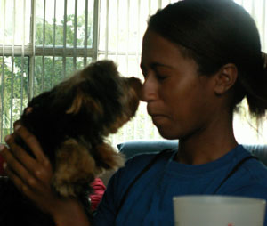
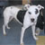
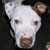
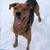
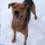

Dog Gallery
Click on the photos below for a larger version and a description


 
American Pit Bull Terrier
Female (spayed)
Adult: 3 years 7 months (best estimate)
Medium: 54 lbs
Status: Available for Adoption
Rescue ID: D110004
Housetrained: Yes
Tiger Lily came from a West Virginia shelter, where she was about to be euthanized, and what a shame that would have been. Lucky for her and for her future adopter, a Good Samaritan heard about Tiger Lily's fate and drove eight hours to pick her up and bring her to safety.
We don't know how this sweet girl came to lose her home, because clearly she was someone's pet. Tiger Lily is house-trained, crate-trained, and just all-around well-behaved. We found out in the first hours we had her that she knows "sit," "shake," and "speak," and we're sure that she will reveal more as we get to know her.
Tiger Lily has been around several dogs of various sizes and personalities of both sexes and has displayed 100% positive behavior - she wants either to play or to kiss. She would also like to kiss every person she meets, and if she can snuggle, that is just a bonus.
Good with Dogs, Cats, and Kids
Rhodesian Ridgeback / Black and Tan Coonhound / Mixed
Female (spayed)
Adult: 6 years 11 months (best estimate)
Medium: 50 lbs
Status: Available for Adoption
Rescue ID: D110005
Housetrained: Yes
Ruby is a very sweet girl who loves to run, loves to sleep, and LOVES her Frisbee and her tennis ball.
This sweetie pie is perfectly housebroken and can be left unsupervised or crated. She walks well on a leash, and she's beautifully trained and obedient... but she does expect you to reward her with a treat now and then!
Ruby gets along great with people of all ages, cats, and other dogs. She's happy snuggling with people, playing with dogs, or sleeping in her bed by the fireplace. This happy girl would be a great addition to a big family with kids and other pets or she would be just as happy being a buddy to a one-person household.
Good with Dogs, Cats, and Kids
Pit Bull Terrier / Mixed
Female (spayed)
Adult: 2 years (best estimate)
Medium: 38 lbs
Status: Available for Adoption
Rescue ID: D100007
Housetrained: Yes
She is a complete love bug with people but we’re not yet sure how she is with other dogs or with cats. This sweet girl is good on the leash, house-broken and already crate trained. Peanut Butter is eager to learn and is quickly picking up more basic commands.
Peanut Butter would be a GREAT companion for a runner or hiker!
She loves to lick children and peanut butter :-) Since she tends to get exited, care should be taken around small children.
Delicious little Peanut Butter is soft as velvet and you will want to pet her for hours.
Pit Bull Terrier / Mixed
Male (neutered)
Adult: 7 years 3 months (best estimate)
Large: 60 lbs
Status: Available for Adoption
Rescue ID: D070073
Reaction to New People: Friendly
Joker is a big, sweet teddy bear. He is well-behaved, walks well on a leash, and knows basic commands. He is a very friendly boy who gets along well with people of all ages, cats, and most dogs, although we don't recommend that he be placed with a small dog. Joker is housebroken and can be left alone safely without supervision. We would love to find him a good foster or forever home.
Good with Cats, and kids
German Shepherd Dog / Mixed
Female (spayed)
Senior: 13 years 2 months (best estimate)
Large
Status: Available for Adoption
Rescue ID: D080021
Housetrained: Yes
Owner Experience Needed: None
Reaction to New People: Friendly
Dottie Girl came to our rescue when her human Mom passed away suddenly. She is great with other dogs and people of all ages (including kids).
Her favorite activity is playing fetch, even indoors. She will play fetch for as long as you'll throw the ball. But, she settles easily for quiet time. She likes to go for walks; although it takes her a bit of time to adjust to a new environment. We've noticed that she is a lot more confident (and thus adjusts more quickly) when other dogs are around. Dottie Girl knows several commands and is very well behaved.
Her foster mom says that Dottie Girl is very quiet and she doesn't get on furniture. She loves to have her back scratched — more than her tummy. She will stand in front of you and lean until you scratch along the ridge of her back.
Misha's adoption fee is $150.00
Good with Dogs, and Kids
Not Good with Cats
Pit Bull Terrier
Male (neutered)
Adult: 6 Years 10 Months (best estimate)
Medium: 50 lbs
Status: Available for Adoption (adoption info)
Rescue ID: D070125
Housetrained: Yes
Reaction to New People: Friendly
This beautiful, well-behaved boy is looking for a new home. His owner was forced to give him up when Buster was discovered in the barracks. Buster is a fabulous dog - obedience-trained, house-broken, friendly, affectionate - and will require a fabulous home. In addition to all of the important stuff, he is beautiful - gorgeous cream base with a golden brindle saddle, amber eyes, and about the sweetest face imaginable.
Buster is fine with female dogs, and OK with some males, but will only be considered for a adoption by a family that has a female dog or no other dog. Trust us - he's a keeper.
Good with Kids
Not Good with Cats,
American Staffordshire Terrier / Mixed
Male (neutered)
Young: 6 years 4 months (best estimate)
Medium: approx. 45 lbs
Status: Available for Adoption
Rescue ID: D060036
Reaction to New People: Friendly
Baxter is a doll baby! He was found by a Good Samaritan who just didn't have the heart to leave him wandering.... Baxter's a sweet boy, loves people, and is so cute people stop on the street to find out more about him. He is incredibly affectionate! He is, however, a strong, active dog, and would do best with an experienced owner.
Good with Kids
Not Good with Dogs or Cats